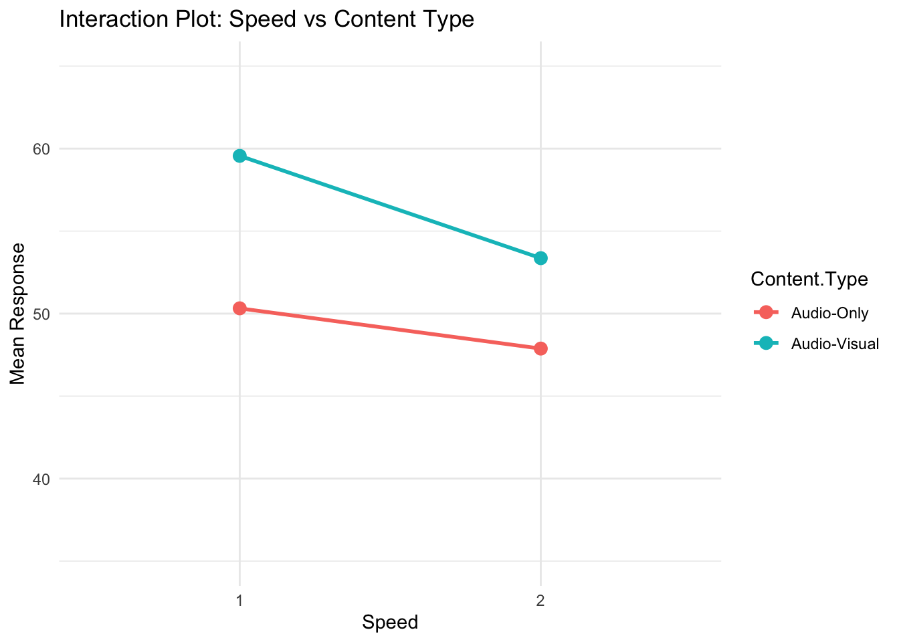

There are two approaches to analysing data from experiments. The first is to construct a set of a-priori contrasts, test these, and perhaps afterwards use unplanned comparisons to see if there are any other interesting treatment effects or differences that we might want to follow up with in a future experiment.
The second approach is an analysis of variance (ANOVA). This usually tests much more general hypotheses about the presence of main and interaction effects. The two approaches are not mutually exclusive, but if the questions we are interested in are not answered by an analysis of variance, we should concentrate on the contrasts. The two approaches may also give what seem to be different answers.
For example, from the ANOVA F-test, we may see no evidence for interactions, but if we look at specific contrasts for interactions, there is evidence. This can happen; it is not a mistake in the methods, it is just a difference in the hypotheses that are being tested.
Often, an ANOVA is expected in journal publications and research reports, even if it does not answer the specific research questions. The more specific questions are answered by constructing confidence intervals or tests for contrasts.
Let’s revisit the specific research questions for the working example:
Does lecture modality have an effect on comprehension?
Does playback speed have an effect on comprehension?
Is there an interaction effect of modality and playback speed on comprehension?
With these question, conducting an ANOVA is enough. We simply want to know if there are any main effects or interaction effects. We have answered that with the ANOVA above. But what if the questions were a bit more specific:
Does audio-visual content increase comprehension?
Does increased playback speed decrease comprehension?
Is the effect of playback speed improved by audio-visual content?
So far we have only contrasted two treatments. Sometimes we want to compare groups of treatments to one another. More generally, a contrast is defined as a linear combination of the parameters where the coefficients add up to zero:
\[L = \sum_1^a h_iA_i\]
such that \(\sum_1^a h_i = 0\). This ensures a fair comparison. For example, in a compairson of two group means we have:
\[ L = \mu_1 - \mu_2 = 1\times \mu + (-1) \times \mu_2\] Here, the coefficients are \(h_1 = +1\) and \(h_2 = -1\) which sum to zero. This simple difference is the simplest form of a contrast. Effectively, \(\sum_1^a h_i = 0\) represents the null hypothesis, that the difference equals 0.
Let’s start with the first question. Remeber the treatments were:
1x Audio-Only (1AO)
2x Audio-Only (2AO)
1x Audio-Visual (1AV)
2x Audio-Visual (2AV)
To answer the first question, our contrast should compare Audio-Visual vs. Audio-Only and we do this by averaging over the levels of playback speed.
First we compute the average response for the two levels of content type, AV and AO.
\[\frac{(\mu_{1AV} + \mu_{2AV})}{2}\]
\[\frac{(\mu_{1AO} + \mu_{2AO})}{2}\]
Now we are comparing groups of means. The first group contains the means for all treatments that included Audio-Visual level and the second contains the Audio-Only level. We are asking whether the AV level increased comprehension. So we are testing:
We could specify the difference either way, that is AO - AV. Then we would be doing a one-sided lower tailed test.
\[
\begin{aligned}
&\frac{(\mu_{AV1} + \mu_{AV2}) - (\mu_{AO1} + \mu_{AO2})}{2} \\
&\frac{(1) \mu_{AV1} + (1) \mu_{AV2} + (-1) \mu_{AO1} + (-1) \mu_{AO2}}{2} \\
& (0.5) \mu_{AV1} + (0.5) \mu_{AV2} + (-0.5) \mu_{AO1} + (-0.5) \mu_{AO2} \\
&0.5+.0.5-0.5-0.5 = 0
\end{aligned}
\] This is a linear combination of the model parameters. What does the contrast and coefficients look like for the second question? To test whether playback speed decreases comprehension, we need to compare treatments at 1x speed vs. 2x speed:
\[\frac{(\mu_{1AV} + \mu_{1AO})}{2} - \frac{(\mu_{2AO} + \mu_{2AV})}{2}\] The coefficients sum to zero as before. This might be confusing but we are simply grouping treatments together and comparing them. To compute these contrasts in R, we first fit the model using lm() and extract the treatment means using emmeans from the emmeans package.
The emmeans function returns the treatment means, the standard error, degrees of freedom and the bounds of 95% confidence interval. Now we want to perform the two contrasts using the means saved in the object we created, means. First, note the order in which emmeans outputs the treatments:
AO1, AV1, A02, AV2.
We are going to use this order and the coefficients were determined earlier to perform the ocntrasts with the function contrast() also from the package emmeans:
contrast(means,list(c1 =c(-1,1,-1,1)/2, # AV - AOc2 =c(1,1,-1,-1)/2# 2x - 1x ),by =NULL, side =">")
contrast estimate SE df t.ratio p.value
c1 7.36 2.11 196 3.492 0.0003
c2 4.32 2.11 196 2.050 0.0209
P values are right-tailed
We supply the emmeans object means and then a list of contrasts we call c1 and c2 corresponding to the first and second question. Each contrast consists of the coefficients in the order in which the means appear in the means object and the scaling by 2. Then we need to specify by = NULL because we have manually coded the contrasts and don’t need to specify by which factor the contrasts should made. Lastly, we specify the type of test we want, that is, is it one sided or two sided. If it is one-sided, in which direction? We have specifically constructed the contrasts so that both are “one-sided greater than”.
The output shows the estimate of each contrast, the standard error of the difference in means, t-value and associated p-value. For the first contrast we see the difference in comprehesion scores between the Audio-Vsual and Audio-Only groups was 7.36, this means that the avearge response in the Audio-Visual group was higher than the average response in the Audio-Only group. We see that the p-value to test this contrast is 0.0003 which is extremely small, so it is unlikely that the difference in mean response is due to chance. There is strong evidence to indicate that the audio-visual type increased the mean response, the estimate of this the difference between groups is 7.36% (\(t=3.492\), \(df = 196\), \(p = 0.0003\)).
For the second contrast, the p-value still provides sufficient evidence against the null hypothesis that the difference is zero but it is not as strong as for the first contrast. However, we are still satisfied with the evidence against \(H_0\). The 2x speed decreased the average accuracy (averaged over the levels of content type) by 4.32% (\(t=-2.050\), \(df = 196\), \(p = 0.021\)).
When we have factors with two levels (as we do here) and we conduct two sided contrasts, then the contrast is equivalent to testing for the presence of main effects which what the ANOVA table does! Remember we said that the ANOVA is an extension of the t-test and with two levels. Let’s go through this step-by-step:
We conducted one-sided tests.
If we conducted two-sided tests, the results would be the same as in ANOVA table.
This is because when we have two levels per treatment factor, the contrasts are equivalent to testing whether there are main effects of Speed and Content.Type.
Since we conducted one-sided tests, the p-value is has been split between the tails. To get to the value of the p-value for a two-sided tests, we multiply the one-sided p-value by 2.
# For AV - AO = 00.0003*2
[1] 6e-04
# For 1 - 2 = 00.0209*2
[1] 0.0418
Check that these are the same as in the ANOVA table. The test statistics are also related in this case, \(t^2 = F\).
Let’s answer the third question. Since we have two levels per factor, this question is asking about the interaction. The contrast for the interaction should compare the difference between audio-visual and audio-only in the two levels of playback speed:
At 1x playback speed, the effect of content type is given by:
\[
(\mu_{AV1} - \mu_{AO1})
\]
At 2x playback speed, the effect of content type is given by:
\[
(\mu_{AV2} - \mu_{AO2})
\]
Now to examine whether the effect of content type is consistent across playback speeds, we compute:
We get the same p-value as in the ANOVA table which indicates a lack of evidence against the null hypothesis, there is no evidence to suggest that the two factors interact (\(t=0.892\), \(df = 196\), \(p = 0.374\)).
In practice, we would test the interaction first and then interpret the main effects if there is evidence to support their presence. Here we have done it this way around purely for educational purposes.
We can also visualise the interaction (especially useful for understanding the interaction if there is evidence for one!). There is a built-in function in R that can do this for us, but it will be useful to construct the plot from scratch to ensure you understand what it visualises.
We want to visualise the response per treatment for each combination of Speed and Content.Type (which is already combined in the column Condition). We did this with the emmeans function and stored the treatment means in the object means! To use it to visualsie the treatment means we need to convert to a dataframe, currently it is something called a “emmGrid”
We need to decide which factor will be on the x-axis, let’s do Speed. Below, I use a new package called ggplot2 to visualise the data. It creates nicer looking plots and is more intutiive in my opinion. If you want to see how to use base R to plot this, see the code at the end of this section.
# install.packages("ggplot2")library(ggplot2)# Create the ggplot with interaction linesggplot(means_data, aes(x =factor(Speed), y = emmean, colour = Content.Type, group = Content.Type)) +geom_point(size =3) +# Add points for each Content Typegeom_line(linewidth =1) +# Connect points with lineslabs(title ="Interaction Plot: Speed vs Content Type",x ="Speed",y ="Mean Response") +scale_y_continuous(limits =c(35,65)) +# to visualse the magnitude a bit bettertheme_minimal()

The aes() function maps Speed to the x-axis, Mean Response to the y-axis, and uses Content Type for color and grouping. geom_point(size = 3) adds individual data points, while geom_line(size = 1) connects them to show trends. The labs() function provides axis labels and a title, and theme_minimal() specifies the theme for the plot.
If you want to know more about how to visualise data with ggplot2 have a look at this link. There are plenty of resources mentioned.
It is evident that increasing Speed has a negative effect on the response, and switching from Audio-Visual to Audio-Only content reduces the mean response. When moving from 1x to 2x Speed in the Audio-Visual condition, the response decreases. A similar decline is observed for the Audio-Only condition. Although the decrease appears slightly larger for Audio-Visual than for Audio-Only, the difference is not substantial enough to conclude a significant interaction effect between Speed and Content Type as evidenced by the ANOVA and contrasts we did before.
2 Conclusion
Code
# Set up an empty plotplot(means_data$Speed[means_data$Content.Type =="Audio-Visual"], means_data$emmean[means_data$Content.Type =="Audio-Visual"], type ="o", col ="#F79256", pch =16, ylim =range(means_data$emmean), xlab ="Speed", ylab ="Mean Response", main ="Interaction Plot: Speed vs Content Type",xaxt ="n")# - plot(...) initializes the graph using Speed as the x-axis and Mean Response as the y-axis.# - The subset `means_data$Speed[means_data$ContentType == "Audio-Visual"]` extracts only Audio-Visual data to plot the first line.# - type = "o" specifies that both points and lines should be drawn.# - ylim = range(means_data$emmean) ensures that the y-axis spans the full range of data.# - xaxt = "n" suppresses the default x-axis, allowing for manual customization in the next step.# # Since the x-axis represents discrete categories (Speed levels), we manually specify the tick labels with the function `axis` and then we overlay the means for the Audio-Only groups with `points`. Lastly, we add a legend. # Add x-axis labels manuallyaxis(1, at =unique(as.numeric(means_data$Speed)), labels =unique(means_data$Speed))# Add Audio-Only grouppoints(means_data$Speed[means_data$Content.Type =="Audio-Only"], means_data$emmean[means_data$Content.Type =="Audio-Only"], col ="#5BC0EB", pch =16, type ="o")# Add legendlegend("topright", legend =c("Audio-Visual", "Audio-Only"), col =c("#F79256", "#5BC0EB"), pch =16, lty =1)
Code
# OR WITH BUILT IN interaction.plot(x.factor = means_data$Speed, #x-axis variabletrace.factor = means_data$Content.Type, #variable for linesresponse = means_data$emmean, #y-axis variablefun = mean, #metric to plotylab ="Counts",xlab ="Seasons",col =c("red", "blue"),lty =1, #line typelwd =2, #line widthtrace.label ="Species")